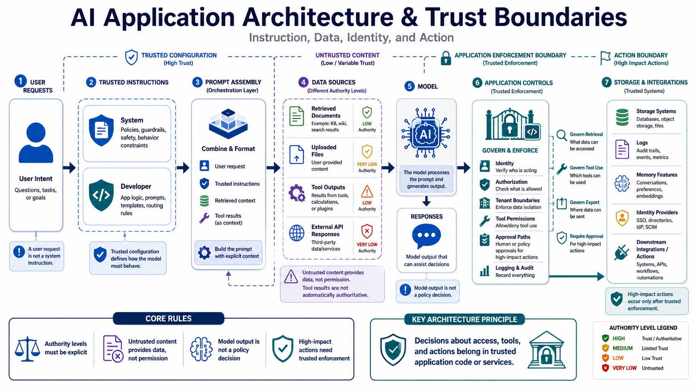

Architecture and Trust Boundaries
Connecting to LMS... Progress: in progress

Narration
AI application architecture should name the major sources of instruction, data, identity, and action. Users provide requests. System and developer instructions define trusted behavior. Prompts assemble context. Retrieved documents, uploaded files, tool outputs, and external API responses provide data with different authority levels. The model produces responses. Storage systems, logs, memory features, identity providers, and downstream integrations preserve or act on the results. Each boundary deserves a deliberate control.
A trust boundary is crossed when data, instructions, identity, or control moves between components with different trust levels. A user's request is not the same as a system instruction. A retrieved document is not the same as trusted configuration. A tool result is not automatically more reliable than the service that produced it. A model response is not a policy decision by itself. Clear boundaries help the application decide what may influence answers, what may influence permissions, and what may trigger actions.
Every data source should have a clear authority level. Trusted application configuration can define allowed tools, allowed retrieval sources, user roles, and safety policy. Untrusted content can provide evidence or user intent, but it should not grant itself permissions, rewrite the system rules, or authorize new data access. This distinction matters because natural language can look authoritative even when it comes from a document, email, ticket, web page, upload, or tool output that should be treated only as data.
The architecture should also show where decisions are enforced. If the application decides whether a user can retrieve a document, call a tool, export data, or approve an action, that decision should happen in Python code or a trusted service, not only in prompt wording. The model can assist with interpretation and drafting, but application controls should enforce identity, authorization, tenant boundaries, tool permissions, logging, and high-impact approval paths.